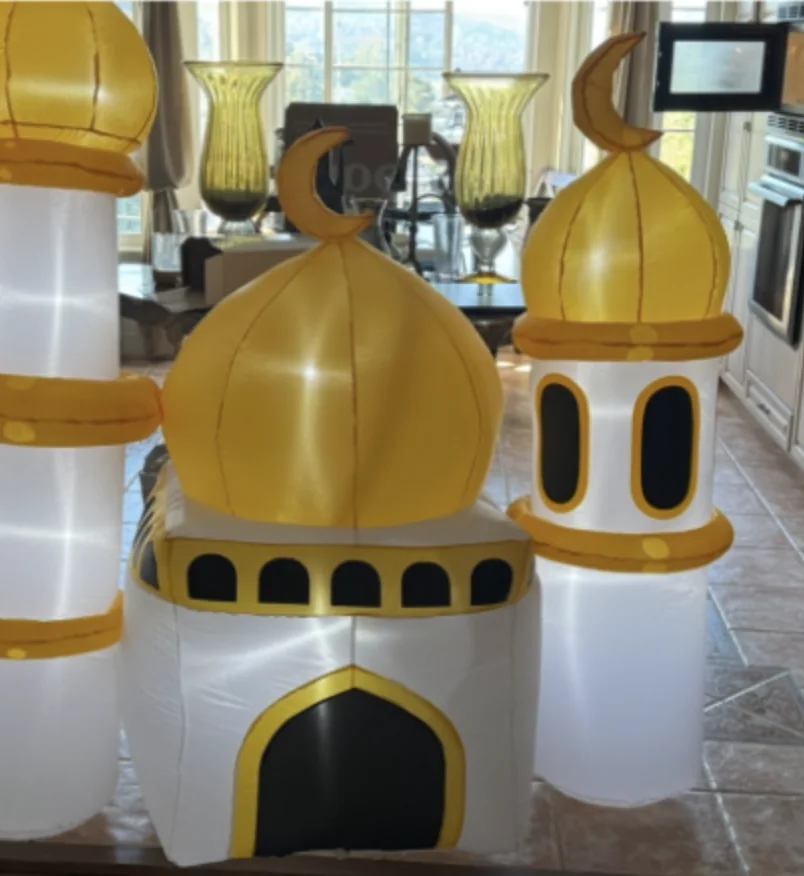
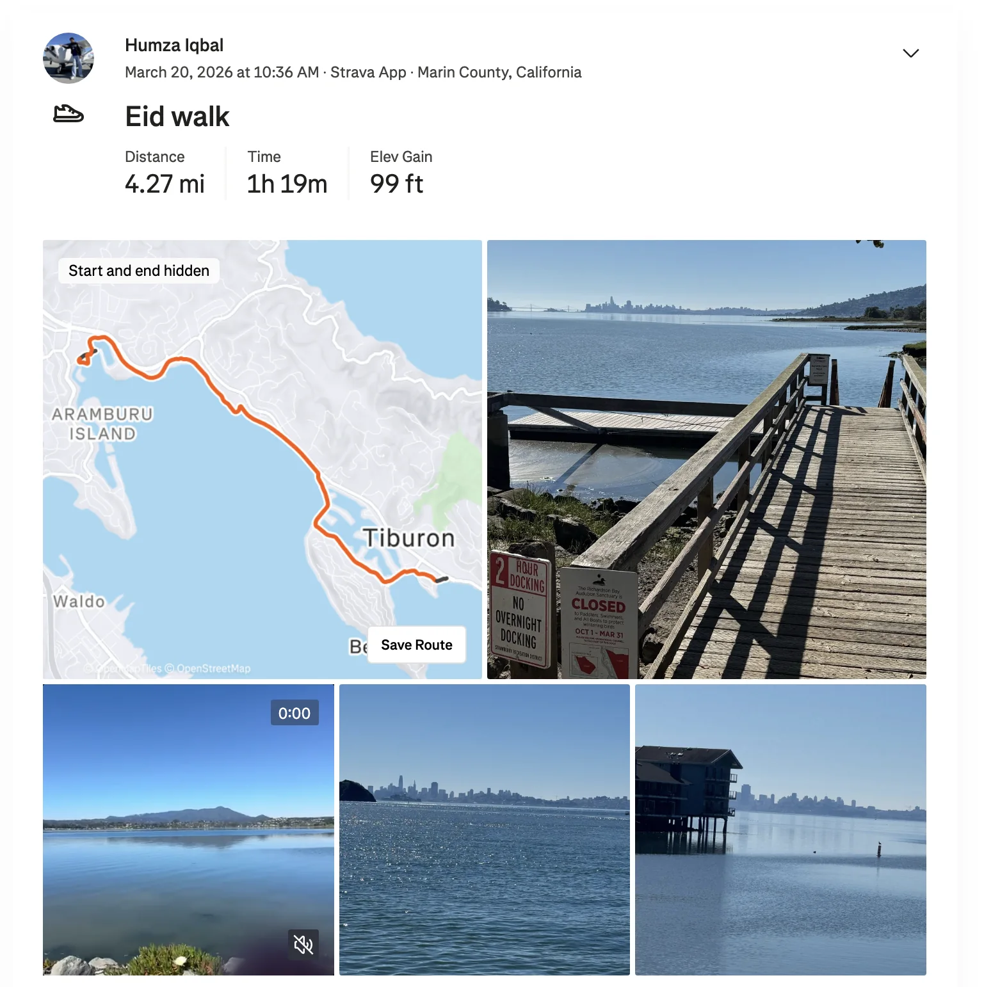
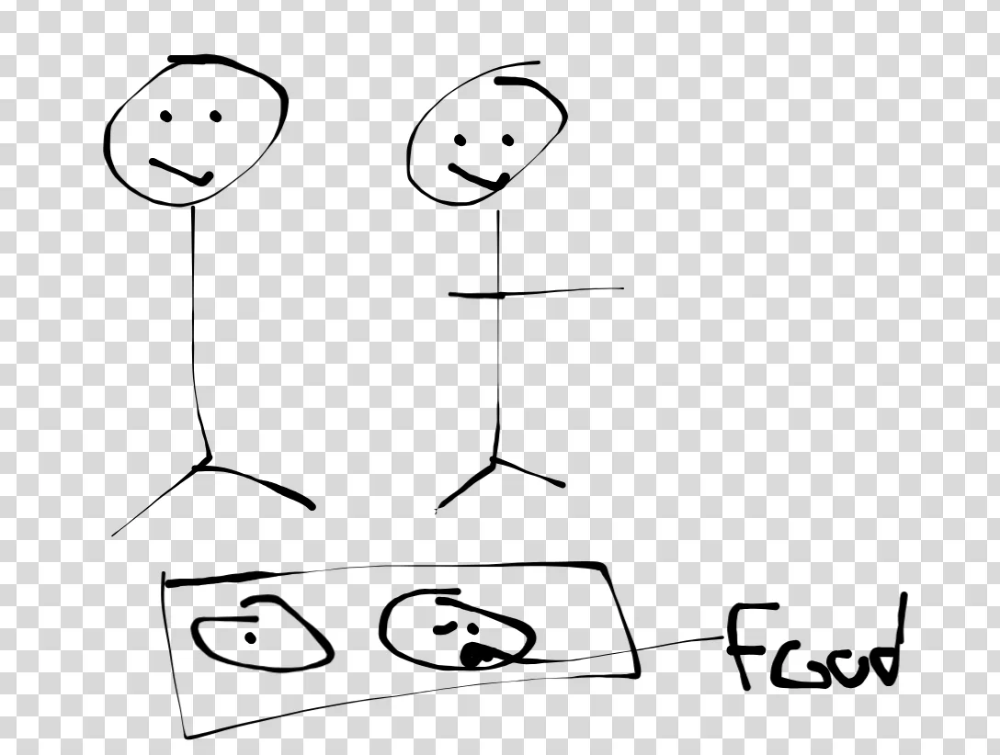

Shoutouts
Congrats to “Not a matcha bitch” for matching at UCLA for residency! Super excited to see all the awesome things you’ll do on your doctor journey
Monday
After work I continue my 1:1 series with “Sergeant Sassy”. At this point I only have about a handful of 1:1s left so I’m pretty close to finishing. We go to a middle eastern place over by the Caltrain station and talk a lot about love, life, and everything in between. She mentions an interesting article in NPR I haven’t read yet about whether love is luck, skill, or both. Naturally the theme is something I can resonate given what a lot of my goals this year have been working towards. Again without having read the article myself I would say my own personal take is probably a mixture of both. Speaking only in the context of myself I’m sure some of the things I’ve done this year will help me with that goal but I think some of it may just come down to luck.
Tuesday
There was a power outage at the office today so everyone wound up leaving work slightly early. Not super super early (say 4pm) but still early. I met up with “Top of the Rope” and one of her highschool friends who is visiting and we went on a walk throughout the city. “Top of the Rope” said that me and this other friend are her two biggest walking friends so perhaps this was inevitable.
I learned a fair amount about Chicago on this walk including some of the different neighborhoods like Hyde Park, the fact that UChicago apparently employs one of the largest police forces in the world, has an adversarial relationship with the neighborhood next to it, and which magnet schools there are in the city.
Today was also St. Patty’s day and I was told that SF’s take on it is certainly less vibrant than Chicago’s. To be fair I don’t think we can really compete with a place that dyes the river green for the day. But on the other hand there is also far less street fighting so we will take that.
We went to “Top of the Rope’s” place and cooked a dish which was quite good. I don’t remember what all was in it, we had chicken broth, a bunch of spinach that required destemming, and some lemon which gave it some zest.
Wednesday
Today after work I went to an iftar event.. H/t to “The Fisherman” for telling me about it (and later coming :D). While it hasn’t been amongst my bigger goals it has been apparent I don’t have many Muslim friends here in SF so trying to expand that is always a good idea.
The event was mainly us hanging out, eating and talking. I’ll admit the food was … not the best IMO. I know some of you will immediately be ready to play the picky eater card which may well be fair. I’m not a big fan of south asian food which is what a lot of the food there was. But that’s fine I wasn’t really there for the food. The people themselves were pretty cool. Nobody who I became super close with but definitely people I’d be down to see again. The person who stood out the most to me is probably a guy who isn’t Muslim himself but really wanted to learn more about the faith and even fasted that day and partook in the prayers alongside us.
I typed up some longer form thoughts I sent to “The Fisherman”
1. I met some people who had a very straight man esque vibe to their humor. I could tell by the way one of the guys was jokingly referring to himself as a bitch among other things. I actually very nearly said my joke when I mentioned I did standup and I actually think it would have gone over well. Note I obviously am pretty judicious in that setting and there were plenty of guys I would not have said that to
2. It is pretty universal how many people will say they “hang out, watch tv shows, eat food” whenever I ask what people do for fun. Not a bad thing (at least not worse than usual) but I have yet to find a good balance that lets me get to interesting topics in a conversation risk free but maybe interest and risk are inherently correlated in a way that prevents that from happening
Oh yeah, speaking of “The Fisherman” she came to the event and brought the petition to get the public transit tax on the ballot which wound up being quite popular. That’s not too surprising given the fact that the organization that’s putting on this iftar is pretty political in nature so it would attract civically minded muzzies.
Thursday
Today after work I went home to celebrate Eid with my family. For those who don’t know Islam follows a lunar calendar meaning the new day really begins at night so you can say that after sunset today is when Eid actually begins.
For the first time ever I fasted during work today and it wasn’t as bad as I thought it would be. Next year I think I’ll try to do that more.
After going home and breaking the fast I sat around and talked with my family. The highlight of which was definitely when me and my sisters were hanging out. My younger sister is actually the least up to date on internet slang so me and my older sister were explaining the concept of “mogging” and “maxing”. I also asked my younger sister for her take on Gen Z memes and she said the following which was gold
I have the brainpower to interpret things I don’t need these memes dumbed down. People are like wah I’m overstimulated. No! Your just on your phone all day” my younger sister (5 years younger solidly Gen Z) on Gen Z memes
Friday
Eid Mubarak to all celebrate! And to all who don’t … Eid Mubarak because why not right?
The day started with me and my Dad going to the Masjid for Eid prayer. Before the prayer the Imam (think pastor) gives a speech.
He started off by saying that he wanted to introduce some slang to make this relevant to the youth of today. He introduced the phrase GEGOAT or Greatest Eid Gift Of All Time. I give him points for trying on that one. The point of this was to say that the greatest Eid gift wasn’t material possessions or money but instead seeing the community around him being active during Ramadan which was perfectly fine. I’ve heard better pre Eid prayer speeches before. It was fine but I was personally hoping for something a bit more thought provoking.
After the prayer I had my annual run in with someone I’ve known since the 1st grade who I used to consider one of my best friends up until college. Post college any time I ran into him it would be incredibly awkward. He didn’t really seem all that interested in talking with me. While he did answer my questions he seldom asked many in return. There was a point where we stood there in silence. The kind of silence that felt to me like we should have more to talk about considering we’ve known each other for almost 20 years now and yet here we are. I did learn he got married though so maybe I should ask him for dating advice when I see him at our next awkward checkin. I wonder what kind of first impression he makes on people? My Dad thinks he’s introverted and cold which for all my flaws I guess I’m not those things. Ahh well.
When we got home I saw that my sisters had put up this inflatable mosque which is very cute

After that everyone was doing their own thing for a while. I decided to go for a walk.

After Friday prayer me and my parents went to Eid lunch at someones house. My sisters didn’t want to go so it was just the three of us. There were a bunch of people eating on the floor.

I felt a little bit cramped as my lack of knowing how to sit cross legged comfortably came back to haunt me. The food was … well I remember my training about not being negative. Let’s just say the vibes were good! I met this one older guy who is a scout leader as a hobby which is pretty cool. He told me about some of his adventures going to Yosemite and other such places. He mentioned they did a lot of hiking which makes sense.
After that my parents went to another Eid party which I didn’t want to go to so I was home with my sisters. We were watching a reality TV show called Age of Attraction which is about these couples with a big age gap dating. I realized as I watched this show that I’m not a big fan of these kinds of trashy TV shows. Don’t get me wrong I watch anime and some particularly trashy ones I won’t be mentioning here so its not as though I think I’m above this or anything, it’s more that judging real people made me feel sad. I think the whole point of these shows is you watch because you enjoy commenting on and judging these people and yet I couldn’t muster any real feelings. There were some points during the show where some couples with an age gap of 20+ years were trying to explain this to their parents and all I could feel was apathy. My sisters got really into this and were commenting a lot. Good for them, I’m glad they were enjoying but I just didn’t.
I wish I could have gone out and wandered around but one of the annoying things about Marin is how isolating it can feel. There isn’t a lot to do without a car which my parents took. And its not as though I could drive anyway. My sisters were perfectly fine spending the night at home watching reality TV and I just couldn’t fathom the thought of being home on a friday night just chilling like this. I think I would enjoy going home more if it didn’t feel like there was an energy gap between me and the rest of my family. In the mean time I vibecode a new feature for the newsletter where you can do keyword searches. Hopefully thats cool.
Saturday
I’m not really off the clock from hanging out with my family yet since my Mom still wants to do something with everyone but since nobody else in my family is ready to go early in the morning I go back to SF and do trash pickup so I don’t feel like I’m just sitting at home doing nothing and I can do some socializing with friends to get that out of my system.
I see “Not a Matcha Bitch” who I congratulate on matching to UCLA for residency! I also saw “The Notetaker,” “The Politician,” “The Ravenkeeper,” “The Writer” and others.
After trash pickup I met up with my family again for coffee / lunch. Originally I thought they were coming straight from SF to the lunch place so I waited there for 40 minutes; unfortunately we had a miscommunication and they went to coffee instead. I got some flack from my Mom who thought I ditched the family for trash pickup when I knew they were just gonna be waking up late and getting ready anyway so I didn’t see the point in hanging around watching everyone get ready.
Once lunch happens I part ways with my family. I did enjoy hanging out with them when we were actually doing stuff but I’ll be honest and say that the boredom can get me sometimes. I feel bad for feeling this way but I do wish there was a way I could maximize hanging out with my family while minimizing boredom. One solution I’ve tried to do is invite my family to SF to do things like go for a hike or something. This way I don’t go to Marin and stay the night which feels like a waste and I can still catch up with my family.
I catch up with “The Sounds of Startup” and we just yap for a while. Originally she was going to show me the new version of what she’s been working on but that wasn’t quite in the cards so we push that to the next day instead.
After catching up with her I went to see “The North Bay Trasher”’s band play another show. It was a great time! “The Writer” and “The Notetaker” were also there. I don’t generally do a lot of live music but this was a welcome exception.
Sunday
The day begins with trash pickup with “The Raja of Rhythm,” “The Yogi,” “The Notetaker,” “The Writer” and others.
After trash pickup I go to an Eid party by the same people whose Iftar I went to on Wednesday. It was a good time! I met some cool people including someone else really into board games. I’m gonna invite him to my next board game night. I also talked with someone who commented on how talking to strangers in SF is much harder than in NYC. Over there you could talk to people at the coffee shop, gym etc and I realize I don’t really do that a whole lot and maybe I should!
From there I meet up with “The Sounds of Startup” and I review the second version of her product which looks a lot better. I’m excited to see how real users will feel about this.
While chilling at Mannys waiting for the next activity I run into “The Notetaker” who is “performatively reading” in his own words. I also see “Granola Girlie” who is advertising an online politics forum that her friend is developing. The gist as I imagine it is that its a place for more rigorous and intellectual discussions about SF politics than what you would typically find on Reddit or somewhere else. I’m curious to see how it goes.
I then go for a walk with “The Philosopher” to get Chinese food. Since learning that I like Asian women I was told I need to like Chinese food that isn’t Mongolian Beef or Orange Chicken. We target Shanxi food as it has lamb which I’m sure to like and it’s great! I still think General Tso is China’s best chef but whoever made these lamb noodles is a close second! I’m genuinely impressed!